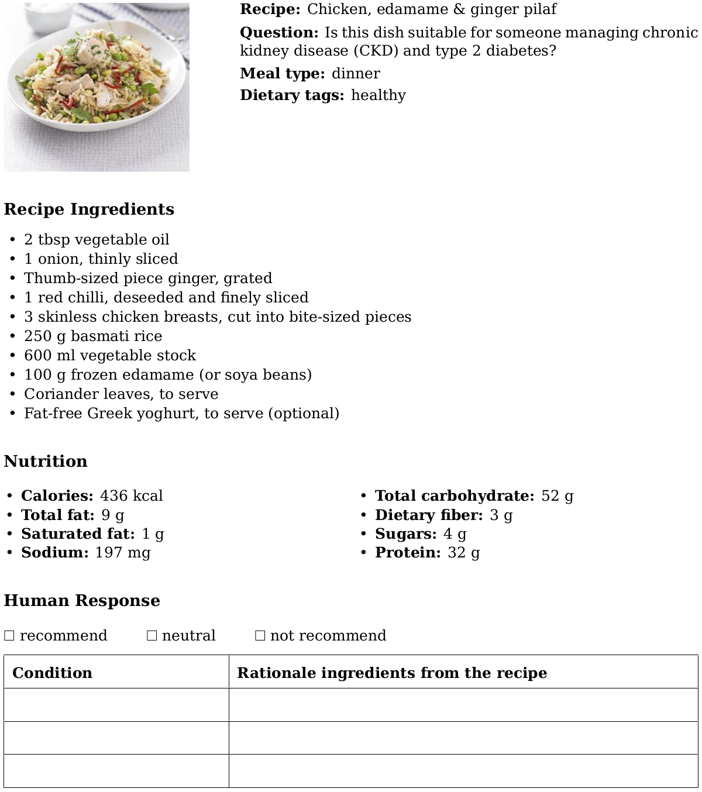
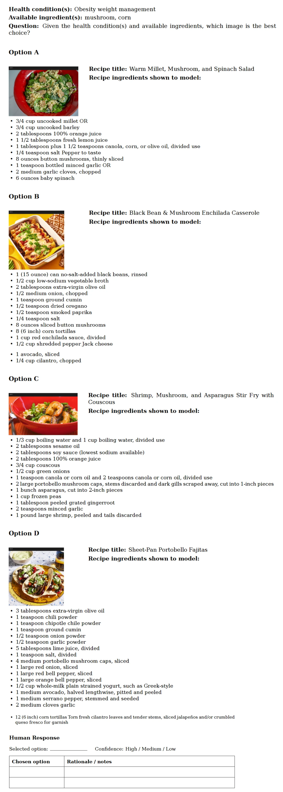
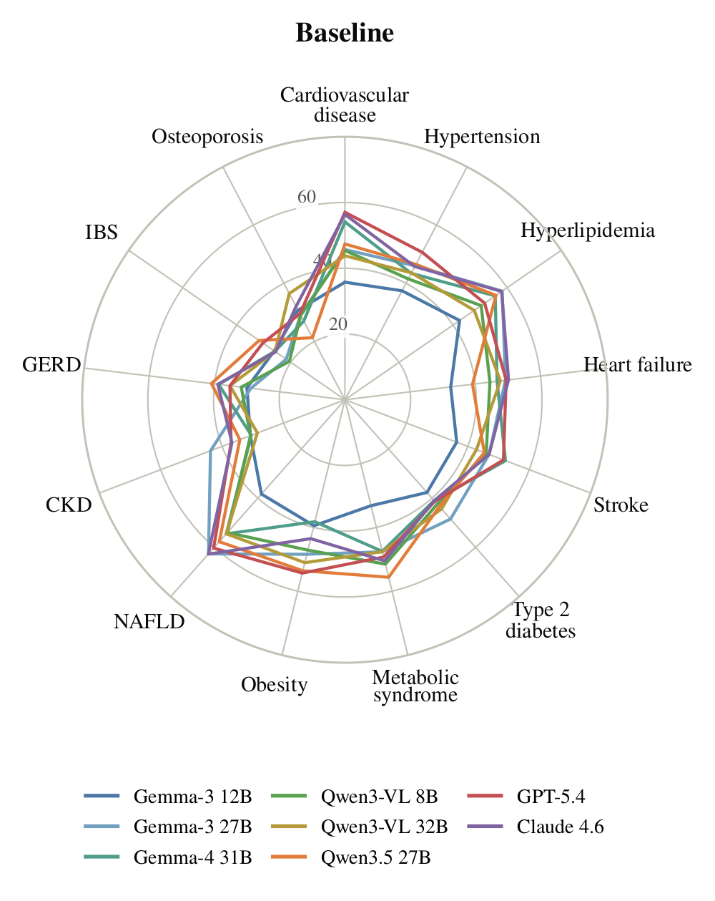
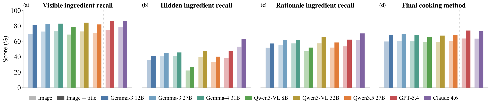
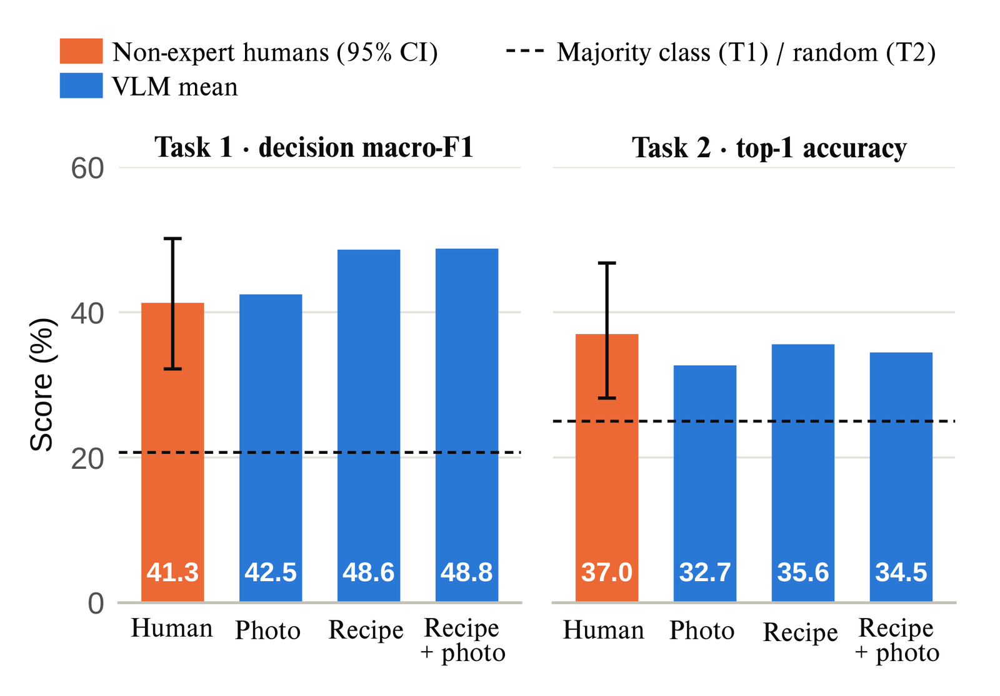

Food AI can recognize dishes, ingredients, and nutrients. However, these abilities do not show whether a dish is suitable for a person with a specific health condition. They also do not test whether such decisions are grounded in the relevant food evidence. To address this gap, we introduce FAM-Bench, a Food-as-Medicine benchmark comprising 2,500 question instances constructed from 1,811 recipes across 13 diet-related health conditions. Gold annotations are derived from rule-based dietary guidance informed by published sources and nutrition professionals. The benchmark contains two complementary tasks: dish-level suitability assessment and comparative dish analysis. We evaluate open-weight and proprietary vision-language models under four prompting modes. Results reveal a substantial gap between suitability decisions and their supporting rationales, as well as limited performance on comparative ranking. These findings highlight persistent challenges in grounded, condition-aware food reasoning.

- 2,500questions in two tasks
- 1,811recipes from 39 websites
- 13diet-related health conditions
- 8vision-language models
Abstract
Key findings
46.1 vs 30.3
Decision vs. rationale macro-F1
Models often reach a label without naming the ingredients that drive it.
30.3 → 52.3
Rationale macro-F1 with knowledge injection
Each condition's food lists in the prompt help. Chain-of-thought alone does not (30.0).
29.4–45.2
Task 2 top-1 accuracy
Random ranking scores 25.0.
69.2 → 76.1
Mean cross-task consistency
Baseline to CoT + KI. Random ranking scores 50.
+0.2 / −1.3
Effect of adding the dish photo
Task 1 macro-F1 and Task 2 top-1, open-weight models.
26.5%
Not-recommended dishes that non-experts recommend
Baseline VLMs: 14.2%.
Benchmark
A generally healthy dish can still be the wrong choice: leafy greens may need to be limited in advanced chronic kidney disease because of their potassium. FAM-Bench covers 13 conditions: hypertension, type 2 diabetes, obesity, metabolic syndrome, NAFLD, heart failure, cardiovascular disease, hyperlipidemia, GERD, IBS, stroke, chronic kidney disease, and osteoporosis.
Task 1 · 1,500 questions
Dish-level suitability
Does this recipe suit the user's conditions?
- Input
- A recipe, optionally its photo, and one or two conditions
- Output
- Recommend, neutral, or not recommend, plus the deciding ingredients
- Metrics
- Decision macro-F1; rationale macro-F1
Task 2 · 1,000 questions
Comparative dish ranking
Which of four recipes is best, given the ingredients on hand?
- Input
- Four recipes, one to three conditions, two to four available ingredients
- Output
- A ranking of the four dishes
- Types
- Condition discrimination (450), eligible-dish ranking (300), ingredient coverage (200), combined constraint (50)
- Metrics
- Top-1 accuracy; MRR
Cross-task consistency (CTC) measures whether a model's Task 2 ranking agrees with its own Task 1 decisions on the same dishes.
How the gold labels are built
-
Collect recipes
1,811 recipes from 39 websites: 17 health-organization portals and 22 food publications.
-
Encode dietary guidance
For each condition, a knowledge base lists beneficial foods, foods to limit or avoid, and per-serving nutrient limits.
-
Label by rule
Foods to avoid and violated limits take precedence. A recommendation needs beneficial foods and compliant nutrition data.
-
Review with nutritionists
Seven nutrition professionals labeled questions blind. Their feedback led to three revisions of the rules.

Example questions


Show the gold answer
Not recommend. Basmati rice (type 2 diabetes) and edamame (chronic kidney disease).


Show the gold answer
B, black bean & mushroom enchilada casserole.
Results
Six open-weight models (Gemma-3-12B, Gemma-3-27B, Gemma-4-31B, Qwen3-VL-8B, Qwen3-VL-32B, Qwen3.5-27B) and two proprietary models (GPT-5.4, Claude Sonnet 4.6), each under four prompting modes.
- BaselineThe model answers directly.
- CoTIt reasons through a fixed checklist first.
- KIThe prompt adds each condition's food lists.
- CoT + KIBoth.
| Model | Task 1 decision F1 | Task 1 rationale F1 | Task 2 top-1 acc. | Task 2 MRR | ||||||||||||
|---|---|---|---|---|---|---|---|---|---|---|---|---|---|---|---|---|
| Base | CoT | KI | CoT+KI | Base | CoT | KI | CoT+KI | Base | CoT | KI | CoT+KI | Base | CoT | KI | CoT+KI | |
| Majority / random | 20.7 | – | 25.0 | 52.1 | ||||||||||||
| Gemma-3-12B | 37.6 | 43.6 | 46.2 | 40.3 | 22.5 | 26.0 | 44.8 | 44.7 | 36.6 | 33.3 | 35.4 | 32.8 | 60.0 | 58.2 | 59.4 | 57.6 |
| Gemma-3-27B | 47.1 | 44.6 | 53.5 | 49.0 | 28.9 | 26.0 | 51.6 | 50.0 | 34.6 | 34.3 | 38.1 | 34.1 | 59.0 | 58.9 | 61.3 | 58.8 |
| Gemma-4-31B | 47.0 | 46.8 | 51.2 | 50.5 | 38.2 | 34.9 | 61.8 | 64.5 | 34.5 | 35.8 | 38.5 | 39.4 | 58.7 | 58.2 | 61.2 | 60.4 |
| Qwen3-VL-8B | 44.0 | 38.7 | 49.9 | 51.9 | 20.9 | 8.6 | 42.6 | 52.8 | 31.4 | 29.4 | 30.9 | 29.8 | 56.7 | 53.1 | 56.9 | 54.5 |
| Qwen3-VL-32B | 44.9 | 47.0 | 53.0 | 51.1 | 22.1 | 31.3 | 49.5 | 56.6 | 37.4 | 32.5 | 35.8 | 33.9 | 60.7 | 56.9 | 59.9 | 58.1 |
| Qwen3.5-27B | 47.5 | 47.5 | 56.6 | 51.5 | 32.7 | 36.6 | 55.9 | 60.4 | 34.7 | 36.4 | 33.7 | 41.8 | 59.0 | 59.5 | 58.7 | 63.0 |
| GPT-5.4 | 51.3 | 49.8 | 54.1 | 52.4 | 36.7 | 37.8 | 57.7 | 59.8 | 33.3 | 38.2 | 36.2 | 45.2 | 58.1 | 61.2 | 60.6 | 65.0 |
| Claude Sonnet 4.6 | 49.2 | 50.1 | 53.5 | 54.9 | 40.1 | 38.9 | 54.5 | 62.5 | 37.1 | 36.4 | 37.0 | 40.5 | 60.9 | 59.4 | 60.8 | 62.6 |
| Mean | 46.1 | 46.0 | 52.3 | 50.2 | 30.3 | 30.0 | 52.3 | 56.4 | 35.0 | 34.5 | 35.7 | 37.2 | 59.1 | 58.2 | 59.8 | 60.0 |
Results by health condition
Decisions are weakest for IBS, osteoporosis, chronic kidney disease and GERD. Knowledge injection halves their gap to the other nine conditions.

Cross-task consistency
Every model is above the 50 of random ranking, and a KI mode is the most consistent for every model. Consistency need not follow accuracy: CoT raises GPT-5.4's Task 2 top-1 from 33.3 to 38.2 but lowers its CTC from 78.2 to 70.3.
| Model | Base | CoT | KI | CoT+KI |
|---|---|---|---|---|
| Gemma-3-12B | 54.3 | 57.4 | 60.3 | 58.9 |
| Gemma-3-27B | 64.6 | 62.5 | 67.9 | 70.8 |
| Gemma-4-31B | 76.5 | 77.9 | 82.9 | 91.5 |
| Qwen3-VL-8B | 64.9 | 59.2 | 67.5 | 63.4 |
| Qwen3-VL-32B | 68.8 | 67.5 | 68.1 | 73.8 |
| Qwen3.5-27B | 71.3 | 72.8 | 80.4 | 82.1 |
| GPT-5.4 | 78.2 | 70.3 | 77.1 | 82.5 |
| Claude Sonnet 4.6 | 75.2 | 76.8 | 77.7 | 85.6 |
| Mean | 69.2 | 68.0 | 72.7 | 76.1 |
Does the dish photo help?
Barely. Adding the photo to the recipe moves Task 1 macro-F1 by +0.2 and Task 2 top-1 by −1.3 for the open-weight models. The photo changes many answers but fixes about as many as it breaks.
Much of the evidence is not visible: only 43.1% of the foods that decide the not recommend questions appear in the photo, and no photo shows a nutrient limit.


Per-model scores for each input setting
| Model | Task 1 decision macro-F1 | Task 2 top-1 accuracy | ||||||||
|---|---|---|---|---|---|---|---|---|---|---|
| P | R | R+P | Δphoto | Δrecipe | P | R | R+P | Δphoto | Δrecipe | |
| Gemma-3-12B-IT | 39.2 | 41.6 | 42.0 | +0.4 | +2.8 | 31.5 | 34.5 | 30.9 | −3.6 | −0.6 |
| Gemma-3-27B-IT | 42.7 | 48.2 | 49.0 | +0.8 | +6.3 | 32.9 | 35.3 | 32.5 | −2.8 | −0.4 |
| Gemma-4-31B-IT | 43.2 | 48.6 | 48.1 | −0.5 | +4.9 | 34.6 | 37.0 | 37.4 | +0.4 | +2.8 |
| Qwen3-VL-8B-Instruct | 39.9 | 46.0 | 47.0 | +1.0 | +7.1 | 29.6 | 30.4 | 29.3 | −1.1 | −0.3 |
| Qwen3-VL-32B-Instruct | 42.7 | 48.9 | 48.7 | −0.2 | +6.0 | 33.0 | 34.9 | 33.9 | −1.0 | +0.9 |
| Qwen3.5-27B | 43.4 | 50.5 | 50.2 | −0.3 | +6.8 | 33.9 | 36.6 | 37.0 | +0.4 | +3.1 |
| Open-weight mean | 41.9 | 47.3 | 47.5 | +0.2 | +5.6 | 32.6 | 34.8 | 33.5 | −1.3 | +0.9 |
| GPT-5.4 | 37.1 | 51.7 | 51.1 | −0.6 | +14.0 | 32.3 | 38.2 | 37.8 | −0.4 | +5.5 |
| Claude Sonnet 4.6 | 44.9 | 51.2 | 50.9 | −0.3 | +6.0 | 33.7 | 37.8 | 37.0 | −0.8 | +3.3 |
Human baseline
Student volunteers answered 97 Task 1 and 100 Task 2 questions. On Task 1 they reach 41.3 decision macro-F1, below VLMs given the recipe (48.6), and recommend 26.5% of not recommend dishes, about twice the rate of baseline VLMs (14.2%).
On Task 2 they reach 37.0% top-1 accuracy, on par with VLMs.


BibTeX
@misc{mao2026fambench,
title = {{FAM-Bench}: Benchmarking Condition-Aware Food-as-Medicine
Reasoning in Vision-Language Models},
author = {Mao, Mingyang and Medisetti, Bhargav Rishi and Grover, Utkarsh
and Ibrahim, Tanvir and Li, Wenyan and Zhang, Tingting
and Lin, Xiaomin},
year = {2026}
}